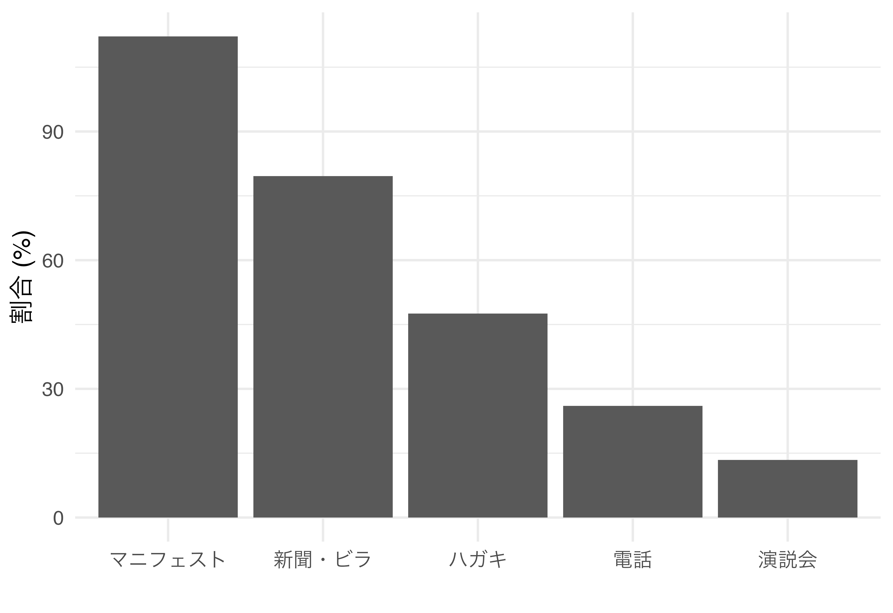
政治文化論
前半の復習＆選挙と情報
宋 財泫
関西大学総合情報学部
2024-08-28
前半の復習
集計結果
後日公開
3つのチャンネル
選挙における情報の重要性
- 選挙を通じた応答性の確保
- 自分にとって望ましい政策を実現した（してくれそうな）政党・候補者には再選（報酬=アメ）を、望ましくない政策を実現した（してくれそうな）政党・候補者には落選（制裁=ムチ）を与える。
合理的無知？
- 応答性を高めるためには情報が必要
- 複雑な政治の世界に関する情報の獲得コストは高い
- 「自分一人」の影響力は限られる
- 合理的無知の可能性
- それでも有権者は一定の情報を持つ（白紙状態ではない）
- 低コストで情報が入手可能なチャンネルの存在
情報獲得のチャンネル
- 選挙キャンペーン
- マスメディア
- 社会的ネットワーク
選挙キャンペーン
- 選挙期間中の政党/候補者の選挙活動
- 街頭演説、ビラ、政見放送、選挙公報、SNSなど
- 選挙期間中は選挙活動が急増
- 情報獲得の機会も急増
マスメディア
- 選挙活動の多くはマスメディア経由で行われる
- 選挙期間中、選挙・政治に関する報道量の増加
- 日常的に政治に関する情報を発信
- 情報のまとめ
- 選挙期間中、様々な争点に関する各政党の立場を比較
政策比較の例（2021衆院選）
- ATO4NENから
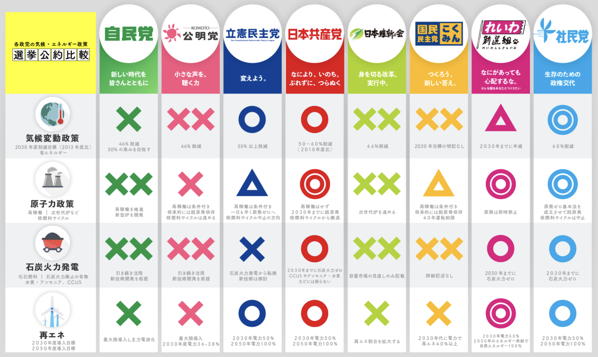
社会的ネットワーク
- 有権者が日常的に接する小さな社会集団
- 家族、友人、職場の同僚など
- ネットワーク内メンバーとの会話から低コストで情報獲得
- 同じ社会ネットワークの人は自分と同じ階層が多い
- 同じ政策を望む可能性が高い
- 信頼できる情報提供者
情報源への接触
情報源への接触の実態
参院選期間中の情報源
- Japanese Electoral Studies V（2016年参院選）から
- 政党・候補者による選挙活動接触
- ハガキ、新聞・ビラの受け取り、電話、マニフェスト、演説会
- マスメディア
- 新聞、雑誌、テレビ、ラジオ、インターネット
- 政治的会話
- 家族、知人・友人
選挙活動への接触
マスメディア接触
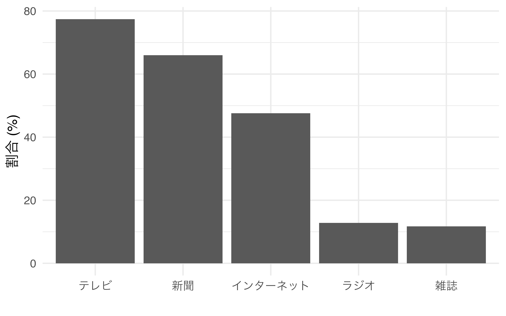
政治的会話
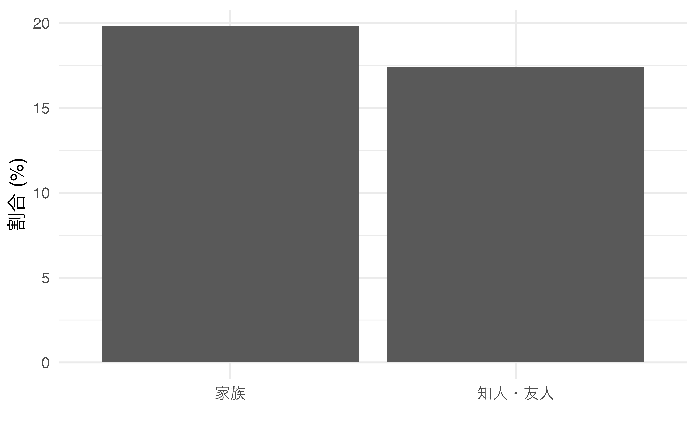
最も役立った情報源
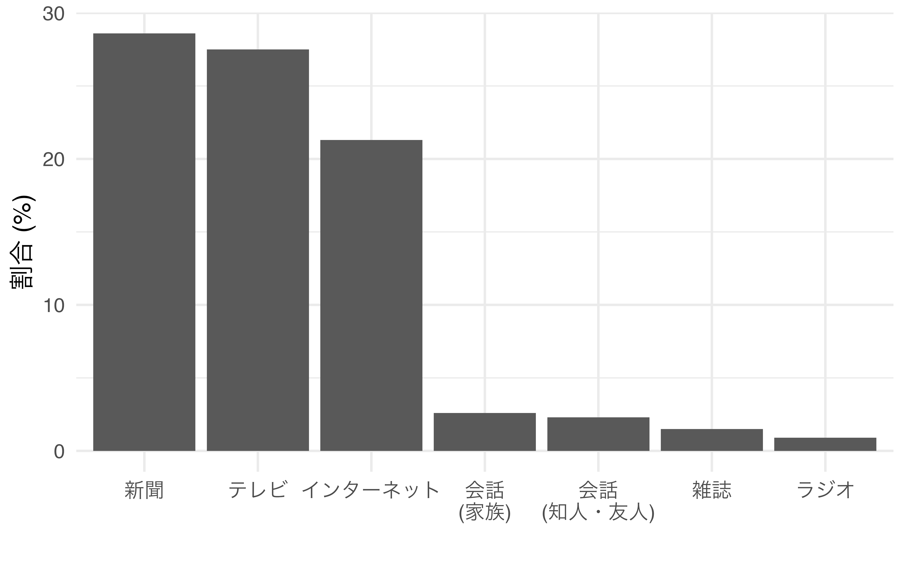
選挙キャンペーンとメディア
選挙運動・メディアの効果
選挙運動・メディアに効果はあるか。そもそも「効果あり」とは?
- 効果ありの例
- 有権者Aは政党Xを支持 or 支持政党なし
- 新聞記事から、自分の政策立場に近い政党は政党Yであることを認知
- 政党Yに投票する
- 効果なしの例
- 有権者Bは政党Yを支持
- 新聞記事から、自分の政策立場に近い政党は政党Xであることを認知
- 政党Yに投票する
- 結果（政党Yに投票）は同じ \(\Rightarrow\) 結果だけで効果は分からない。
限定効果論
- 選挙運動・マスメディアに関する初期研究（Lazarsfeld et al. 1944）
- 選挙期間中、同じ有権者に繰り返し世論調査を実施（パネル調査）
- 世論調査で回答者に投票意図（どこに投票する予定か）を尋ねる
- 選挙運動・マスメディアによって投票先が変化するかに注目
- \(\Rightarrow\) 説得効果
- 結果
- 投票意図を変更した有権者は少数
- むしろ、過半数の回答者において投票意図がより強固
- \(\Rightarrow\) 選挙キャンペーン、マスメディアの効果が限定的（限定効果論）
限定効果論の原因
- 強力な党派性の規定力
- アメリカにおける政党帰属意識の強い規定力
- 選択的接触
- 自分の意見・態度を補強する情報は積極的に接触
- 自分の意見・態度と相容れない情報は無視
- 社会的ネットワーク
- 新しい情報を得ても、同じ利益を共有する家族、知人、友人との会話を通じて元の意見に戻る
限定効果論への批判（1）
- 批判1：有権者ごとに効果は異なるのでは？
- 意見変化のメカニズム：接触と受容（Zaller 1992）
- 意見が変化する確率 ＝ 接触の確率 \(\times\) 受容の確率
- 接触と受容の確率は有権者ごとに異なる
- 例
- 政治知識が高いほど、接触の確率が高い
- 低知識：10%／中知識：50%／高知識：90%
- 政治知識が高いほど、受容の確率が低い
- 低知識：90%／中知識：50%／高知識：10%
- 政治知識が高いほど、接触の確率が高い
接触と受容
- 全有権者において接触と受容の確率が100%でない限り、意見変化は少
- メディアがもたらす意見変化の効果は一部の有権者のみ効果を持つ可能性が存在
- \(\Rightarrow\) 説得効果の大きさは均一ではない
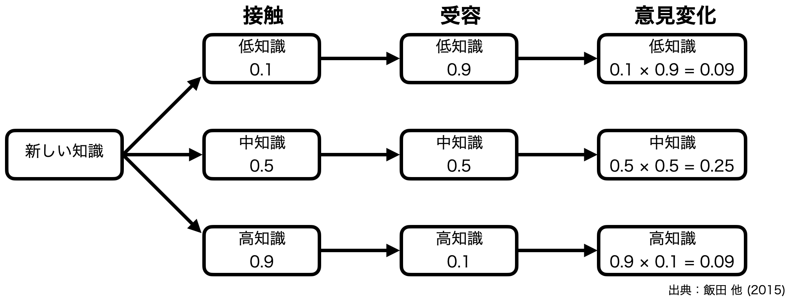
限定効果論への批判（2）
- 批判2：選挙運動、マスメディアが持つ説得以外の効果は？
- 学習
- 情報の接触回数が増えるにつれ、候補者の政策立場の認知が明確に
- 誘発効果（priming effect）
- 政党・候補者を評価する際に重視すべき基準を強調
- \(\Rightarrow\) 議題設定（agenda setting）
- 例1）Krosnick and Kinder（1990）：レーガン政権を評価する際、イラン・コントラ事件を用いるように
- 例2）Hetherington（1996）：景気悪化に関する報道量が増え、投票選択の基準として経済を重視
- 例3）“It’s the economy, stupid.”
日本の例
小泉元首相の記者会見（2005年8月8日）
私は、今年の通常国会冒頭におきましでも、施政方針演説で郵政民営化の必要性を説いてまいりました。そして、今国会でこの郵政民営化法案を成立させると言ってまいりました。しかし、残念ながらこの法案は否決され廃案となりました。国会の結論が、郵政民営化は必要ないという判断を下された。私は本当に国民のみなさんが、この郵政民営化は必要ないのか、国民のみなさんに聞いてみたいと思います。言わば，今回の解散は郵政解散であります。郵政民営化に賛成してくれるのか、反対するのか、これをはっきりと国民の皆様に聞いたいと思います。
郵政民営化は重要か
- 問い1：有権者は投票選択の際、郵政民営化を重視するようになったか
- 問い2：郵政民営化に関する態度が投票選択に与える影響は強まったか
- 東大・朝日共同調査（2003年）、JES III（2005年）のデータから検証
- 郵政民営化の重視程度
- 賛否態度がはっきりしていない回答者の割合
- 郵政民営化への賛否態度
- 2003・2005年衆院選における投票先（比例区）
- 郵政民営化の重視程度
郵政民営化の重視度
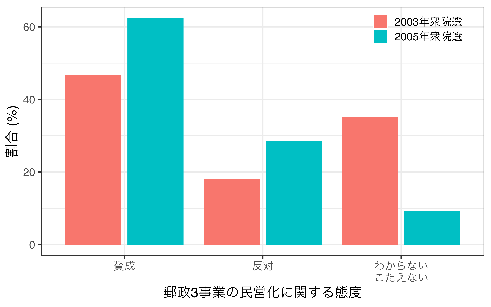
郵政民営化に関する態度と投票先
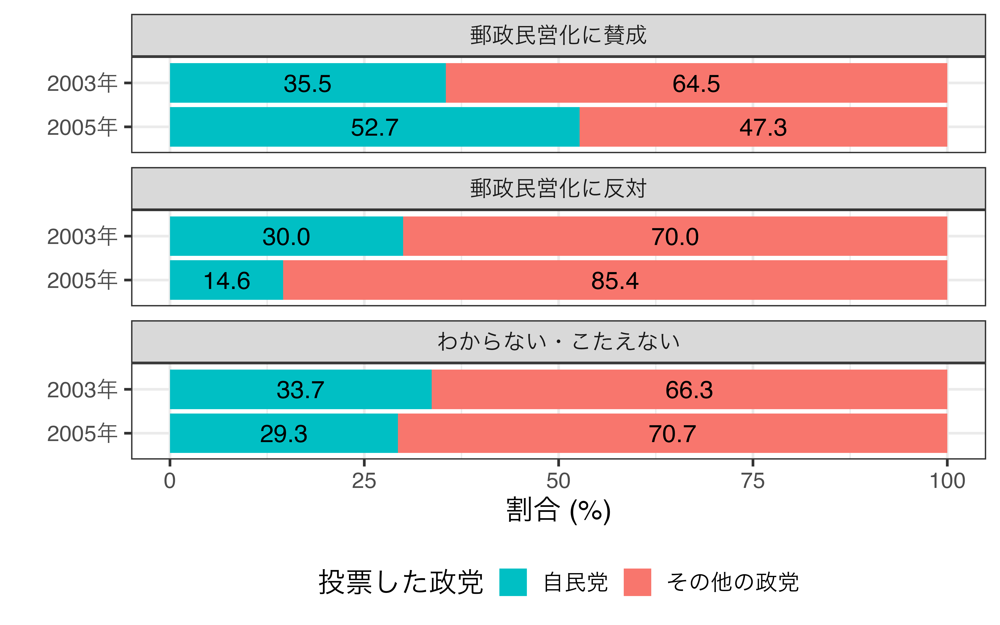
マスメディアと応答性
- マスメディアの機能
- 学習や誘発を通じた選択の手助け
- 代表民主主義における応答性の向上に貢献
- Snyder and Strömberg（2010）
- ある議員に関する報道量が増える
- その議員に関する有権者に知識が向上
- 投票参加率が向上
- その議員の選挙運動が活発化
- 有権者の政策立場が反映されやすくなる
- 選挙区への補助金が増加
- ただし、過大評価は禁物（党派性や社会的ネットワークの影響）
社会的ネットワーク
社会的ネットワーク
- Lazarsfeld et al.（1944）
- 有権者の投票選択において社会的ネットワークがマスメディアより重要
- 同じネットワークの人々は社会経済的要因が比較的同質
- \(\Rightarrow\) 同じ利害関係、選好、党派性を持つ傾向
- 「親しいつながりを持つ小さなグループの中で政治的均質性が育まれるのである。選挙期間中に政治的選好は接触を通じて人から人へ広まっていく。」（Berelson et al. 1954）
- マスメディア、選挙運動に比べ、情報の取捨選択が不要
- 低コストで情報獲得が可能
政治的会話の相手
JES IV Wave 2のデータ
- 「日本の首相や政治家や選挙のことが話題になる人で20歳以上の人」
- 1番目から4番目までの人
- 約7割の回答者が1人以上の政治的会話の相手を持つ
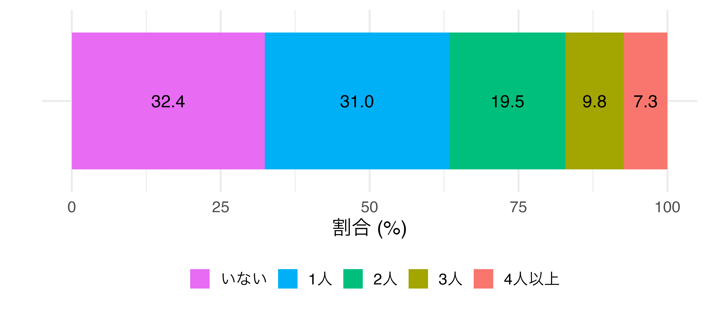
政治的会話の相手
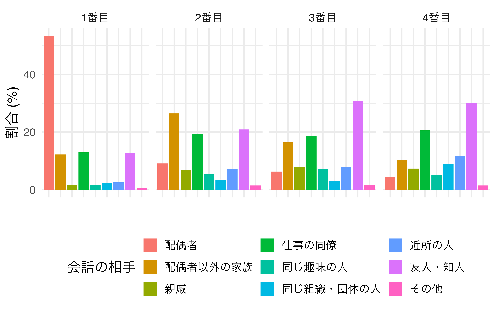
相手の性別
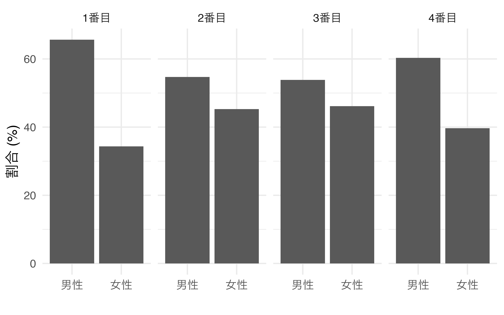
選挙運動・マスメディアは不要?

コミュニケーションの2段階流れモデル（Lazarsfeld et al. 1944）
- 人々はオピニオン・リーダー（opinion leader）から影響を受け、意見を形成
- オピニオン・リーダーはマスメディアから情報獲得
- マスコミ\(\rightarrow\)オピニオン・リーダー\(\rightarrow\)一般有権者
- 近年ならYouTuberに近い?
- \(\Leftrightarrow\) コミュニケーションの1段階流れモデル
- 多くの有権者はマスメディアから直接影響を受ける
- 皮下注射モデル／魔法の弾丸理論（Laswell 1927）
- 例）ナチス・ドイツのゲッベルス
会話は応答性を高めるか
- 同じネットワーク内の構成員の党派性は均質的
- 同じ選好・目標・利害関係を持つため、「信頼できる情報提供者」が見つかりやすい
- 正しい選択への手助け\(\rightarrow\)応答性の向上
- 同質的なネットワークの場合、情報が画一的＆選択の幅が縮小
- 参考）エコーチェンバー効果（echo-chamber effect）
エコ・チェンバーの例
Twitter（現\(\mathbb{X}\)）のリツイートから見た利用者のつながり
- 左：2012年大統領選挙／右：スーパーボウル
- 政治的領域において利用者の分極化が深刻
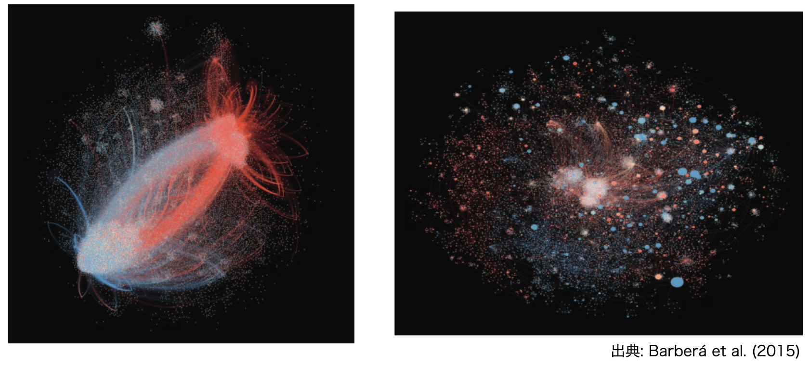
政治文化論（2024年度夏期集中）